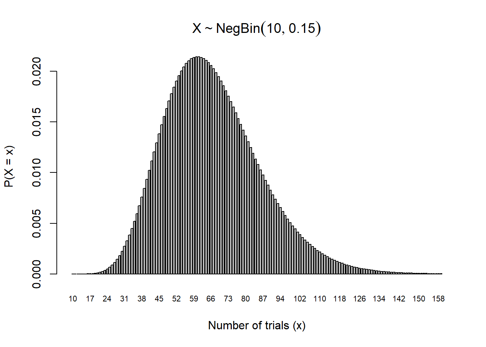
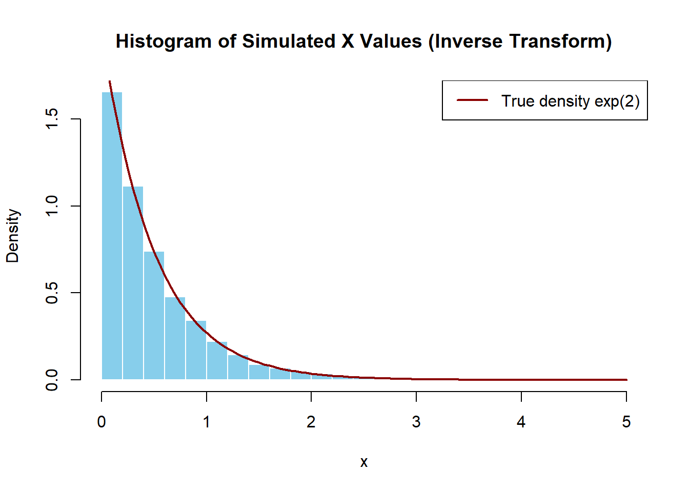
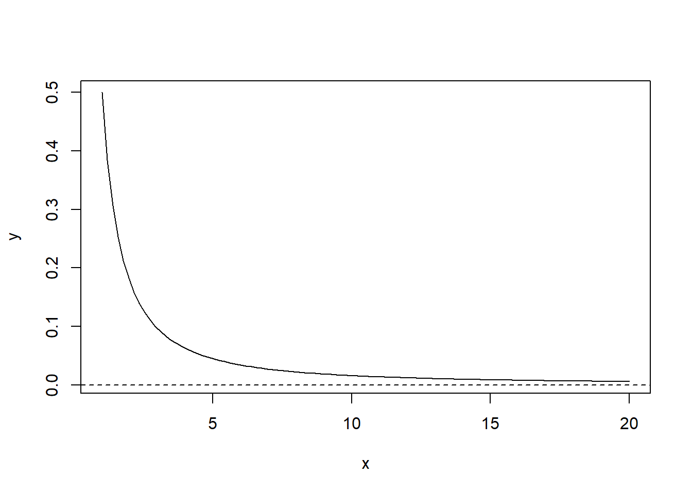

b) Suppose \(\Omega = \{1, 2, 3, 4, 5, 6\}\) and let \(A = \{1, 2, 4, 5\}\), \(B = \{1, 3, 5\}\) and \(C = \{2, 4, 6\}\). Use this example to verify the two results in the distributive law.
Solution
We need to verify two things.
\(A \cap (B \cup C) = (A \cap B) \cup (A \cap C)\)
\[\begin{align*}
B \cup C &= \{1, 2, 3, 4, 5, 6\} \\
A \cap (B \cup C) &= \{1, 2, 4, 5\} \\
A \cap B &= \{1, 5\} \\
A \cap C &= \{2, 4\} \\
(A \cap B) \cup (A \cap C) &= \{1, 2, 4, 5\}
\end{align*}\]
Therefore, \(A \cap (B \cup C) = (A \cap B) \cup (A \cap C)\) as required.
\(A \cup (B \cap C) = (A \cup B) \cap (A \cup C)\)
\[\begin{align*}
B \cap C &= \{1, 3, 5\} \cap \{2, 4, 6\} = \emptyset \\
A \cup (B \cap C) &= \{1, 2, 4, 5\} \\
A \cup B &= \{1, 2, 3, 4, 5\} \\
A \cup C &= \{1, 2, 4, 5, 6\} \\
(A \cup B) \cap (A \cup C) &= \{1, 2, 4, 5\}
\end{align*}\]
Therefore, \(A \cup (B \cap C) = (A \cup B) \cap (A \cup C)\) as required.
Question 2
In R, write R code to simulate rolling a fair six-sided die once, 10 times, 100 times, and 1000 times.
a) Estimate the probability of rolling a 3 or higher based on 1000 simulated dice rolls.
b) If you were to repeat your simulation, would you end up with the same estimate? Why or why not.
Solution
We first simulate the rolling of a fair six-sided die 10, 100, and 1000 times.
set.seed(2025) # set seed for reproducibilitysample(1:6, 10, replace=TRUE) # Rolling a fair six-sided die 10 times
The probability of rolling a 3 or higher based on 1000 simulated dice rolls is
set.seed(2025) # set seed for reproducibilitymean(sample(1:6,1000,replace=TRUE))
[1] 3.449
If we were to repeat this simulation (without setting seed) five times, we get
mean(sample(1:6,1000,replace=TRUE))
[1] 3.43
mean(sample(1:6,1000,replace=TRUE))
[1] 3.546
mean(sample(1:6,1000,replace=TRUE))
[1] 3.525
mean(sample(1:6,1000,replace=TRUE))
[1] 3.471
mean(sample(1:6,1000,replace=TRUE))
[1] 3.631
So no, every time this is repeated, we will get different sequences of simulated rolls, and will therefore have different estimates for the probability of rolling 3+.
Hence, it is important to set a seed for reproducibility purposes so other people can confirm our results.
Question 3
Consider the word ‘STATISTICS’. Is the number of unique arrangements of the letters in ‘STATISTICS’ 10!? Justify your answer and compute the probability that a random rearrangement of the letters in ‘STATISTICS’ will spell the word ‘STATISTICS’.
Solution
No, because some letters are repeated. The word “STATISTICS” has 10 letters in total, but with repeated letters: S 3 times, T 3 times, I 2 times, and A, C appear once each.
To count the number of distinct permutations, we divide 10! by the factorials of the repeated letters: \(\dfrac{10!}{3! \times 3! \times 2!} = \dfrac{3628800}{72} = 50400\).
Note
Theorem: Permutations of a multiset.
Let S be a set with n (not necessarily distinct objects), such that there are\(n_1\) objects of type 1, \(n_2\) objects of type 2, \(\cdots\), \(n_k\) objects of type k, where \(n_1 + n_2 + ... + n_k = n\). Then the number of arrangements of these objects is \(\dfrac{n!}{n_1! \times n_2! \times \cdots \times n_k!}\)
Since there is only one unique arrangement of the word “STATISTICS”, the probability is \(\boxed{\dfrac{1}{50400}}\)
Assume birthdays are equally likely to occur in each of the 12 months of the year. What is the probability that at least two people in a group of three students have birth months in common? Be sure to show your steps.
Solution
It is easier to work with complements when you see the phrase “at least”. So that we get \[\begin{align*}
P(\text{at least one shared})
&= 1 - P(\text{all different}) \\
&= 1 - \frac{12 \times 11 \times 10}{12^3} \\
&= 1 - \frac{11 \times 10}{12^2} \\
&= 1 - \frac{110}{144} \\
&= 1 - 0.7639 \\
&= \boxed{0.2361}
\end{align*}\]
Alternatively, let \[\begin{align*}
A &= \text{first student is assigned any birth month (no restriction)} \\
B &= \text{second student has a different birth month from the first} \\
C &= \text{third student has a different birth month from both the first and second}
\end{align*}\]
Then, \[\begin{align*}
P(A \cap B \cap C)
&= P(A) \cdot P(B \mid A) \cdot P(C \mid A \cap B) \\
&= 1 \cdot \frac{11}{12} \cdot \frac{10}{12} \\
&= \frac{110}{144} \\
&\approx 0.7639
\end{align*}\]
So the probability that at least two students share a birth month is: \[\begin{align*}
P(\text{at least one shared})
&= 1 - P(\text{all different}) \\
&= 1 - 0.7639 \\
&= \boxed{0.2361}
\end{align*}\]
Week 2
Question 1
Suppose that the moment generating function of \(Y\) is given by \[M_Y(t) = e^{(a+b)(e^t - 1)}\]
where \(a > 0\) and \(b > 0\). Use this mgf to find the
a) expected value of \(Y\) and
b) the variance of \(Y\).
Solution
a) The expected value of \(Y\) is the first derivative of the mgf evaluated at \(t = 0\): \[\mathbb{E}[Y] = M_Y'(0)\] Hence, \[M_Y'(t) = \frac{d}{dt} e^{(a+b)(e^t - 1)} = e^{(a+b)(e^t - 1)} \cdot (a+b)e^t\] Evaluated at \(t = 0\): \[\mathbb{E}(Y) = M_Y'(0) = e^{(a+b)(1 - 1)} \cdot (a+b) \cdot 1 = (a + b)\]
b) The variance of \(Y\) is: \[\mathrm{Var}(Y) = M_Y''(0) - \left( M_Y'(0) \right)^2\]
Evaluate at \(t = 0\): \[M_Y''(0) = 1 \cdot (a+b) \cdot \left[ (a+b)(1) + 1 \right] = (a + b)^2 + (a + b)\] Lastly, \[\mathrm{Var}(Y) = (a + b)^2 + (a + b) - (a + b)^2 = a + b\]
Note
Fact: Uniqueness of mgfs. If two random variables \(X\) and \(Y\) have mgfs \(M_X(t)\) and \(M_Y(t)\), and there exists an open interval around \(t = 0\) where both mgfs exist and are equal, then \[X = Y\] That is, \(X\) and \(Y\) have the same distribution.
Question 2
Suppose \(X\) has a Discrete Uniform Distribution over the values \(x = 1,2,3,4,5\).
a) Sketch the pmf and cdf.
b) Find the mgf of \(X\).
c) Compute \(\mathbb{E}(X)\) and \(\mathbb{V}(X)\) two ways: by using the definitions, and by using the mgf you found in part b.
Solution
a) To plot the pmf and cdf in R:
x <-1:5# PMF: Each has equal probabilitypmf <-rep(1/5, length(x))# CDF: Cumulative sum of PMFcdf <-cumsum(pmf)# Plot PMFplot(x, pmf, type="h", lwd=2, col="blue", ylim=c(0, 1),main="PMF of X", ylab="P(X = x)", xlab="x")points(x, pmf, pch=16, col="blue")
Of the thousands of the volunteers who donate blood at a clinic, \(80\%\) have the Rhesus (Rh) factor present in their blood. For the purposes of this question, assume the population size is very large (ie., we can use methods that assume sampling with replacement).
a) If six volunteers are randomly selected, what is the probability that no one has the Rh factor?
b) If six volunteers are randomly selected, what is the probability that at most four have the Rh factor?
c) What if we were interested in the smallest number of volunteers who must be randomly selected if we want to be at least \(90\%\) certain we will obtain at least four donors with the Rh factor? Can we answer this question using a Binomial Distribution? If so, answer this question. If not, explain why a Binomial distribution is not an appropriate model in this situation.
Solution
a) We model this situation using the Binomial distribution, which is appropriate when the population is large, the number of trials \(n\) is fixed, outcomes are binary (success or failure), and trials are independent. Although the true model is hypergeometric due to sampling without replacement, the large population size makes the Binomial a good approximation, as sampling with and without replacement become nearly equivalent (in fact, one can show via the pmfs that \(\lim_{N \to \infty}\) Hypergeometric\((N, K = pN, n)\) = Binomial \((n, p)\)).
With this in mind, let \(X \sim\) binom\((n, p = 0.8)\) where \(p =\) probability that a volunteer has the Rh factor.
b) Once again let \(X \sim \text{Binomial}(n = 6, p = 0.8)\), where \(X\) is the number of people with the Rh factor. Then, \[P(X = 0) = \binom{6}{0}(0.8)^0(0.2)^6 = 1 \cdot 1 \cdot (0.2)^6 = \boxed{0.000064}\]
In R,
dbinom(0, 6, 0.8)
[1] 6.4e-05
Let \(X \sim \text{Binomial}(n = 6, p = 0.8)\), where \(X\) is the number of people with the Rh factor. Then \[P(X \leq 4) = 1 - P(X = 5) - P(X = 6) \] Note that
c) In this scenario, the number of trials \(n\) is not fixed anymore since we are adjusting \(n\) to find the smallest number of volunteers. Hence, a binomial distribution would not be appropriate anymore (see part a solution for a detailed requirement for modelling using binomial distribution).
We would use trial and error approach, computing \(P(X \ge 4)\) for different binomial distributions to determine the smallest \(n\) where \(P(X \ge 4)\) is at least \(0.9\).
Week 3
Question 1
Applicants for a new student internship are accepted with probability \(p = 0.15\) independently from person to person in the order the applicants are received. Several hundred people are expected to apply. The number of students they will accept is \(10\).
a) Find the probability that it will take no more than \(100\) applicants to find \(10\) students to accept for the program.
b) Find the expected value of the number of interviews they will have to undertake to accept \(10\) interns.
c) Calculate the standard deviation for the number of interviews.
Solution
a) Let \(X \sim \text{NB}(10, 0.15)\) be the number of interviews.
Then we wish to find \[P(X \leq 100) = \sum_{x=10}^{100} \binom{x - 1}{r - 1} 0.15^{10}(1 - 0.15)^{x - 10} = 0.945\] In R,
pnbinom(100-10, 10, 0.15)
[1] 0.9449054
To visualize the pmf, we use the R code
# Parametersr <-10# number of successesp <-0.15# probability of successmax_x <-150# max number of trials# Create x values (total trials)x_vals <- r:(r + max_x -1) # total trials from 10 to 159# Compute probabilities for failures = 0 to 149probs <-dnbinom(0:(max_x -1), size = r, prob = p)# Plottingbarplot( probs,names.arg = x_vals,xlab ="Number of trials (x)",ylab ="P(X = x)",main =expression(X %~%NegBin(10, 0.15)),cex.names =0.7# shrink axis labels to avoid overlap)

b) We use the formula of expected value of negative binomial distribution \[\mathbb{E}(X) = \frac{10}{0.15} = 66.66\]
c)We use the formula of variance of negative binomial distribution, then square root it \[\sigma = \sqrt{ \frac{10(1 - 0.15)}{0.15^2} } = 19.43\]
Question 2
An insurance policy costs $400 and will pay policy holders $40,000 if they suffer a major injury (resulting in hospitalization) or $10,000 if they suffer a minor injury (resulting in lost time from work but no hospitalization). The company estimates that each year, 1 in every 5000 of their policyholders has a major injury, and 1 in 1000 has a minor injury. Let ( X ) be the profit on an insurance policy. The probability model for the profit on a policy is shown in the following table:
On the Week 4 course reflection, you found \(\mathbb{E}(X) = \$382\) and \(\text{SD}(X) = \$648\) based on this probability model using the definitions of \(\mathbb{E}(X)\) and \(\text{SD}(X)\).
a) Find the moment generating function (mgf) for \(X\) and use it to find \(\mathbb{E}(X)\) and \(\text{SD}(X)\).
b) Suppose that 10,000 customers purchased this insurance policy in 2023.
Simulate 10,000 values of the profit on a policy in R using the above probability model.
What is the average of the simulated profits? How does this compare to the theoretical value?
What is the standard deviation of the simulated profits? How does this compare to the theoretical value?
Solution
a) Let \(X\) be the amount of profit on an insurance policy.
We first find the mgf. By definition, \[M_X(t) = \mathbb{E}(e^{tX}) = e^{-39600t} \cdot \frac{1}{5000}
+ e^{-9600t} \cdot \frac{1}{1000}
+ e^{400t} \cdot \frac{4994}{5000}\]
We get the expected value at \(t=0\) of \(M_X'(t)\): \[
\mathbb{E}(X) = M_X'(0) = (-39600) \cdot \frac{1}{5000}
+ (-9600) \cdot \frac{1}{1000}
+ 400 \cdot \frac{4994}{5000} = \boxed{382}
\]
Similarly we get the second moment, evaluating \(t=0\) of \(M_X''(t)\): \[M_X''(0) = 39600^2 \cdot \frac{1}{5000}
+ 9600^2 \cdot \frac{1}{1000}
+ 400^2 \cdot \frac{4994}{5000} = 565472000
\]
Lastly we find the SD: \[\text{SD}(X) = \sqrt{M_X''(0) - [M_X'(0)]^2} = \sqrt{565472000 - 382^2} = \sqrt{565326076} \approx \boxed{648}\]
b) To simulate using R
set.seed(123) # for reproducibility# Define possible outcomes and their probabilitiesoutcomes <-c(-39600, -9600, 400)probs <-c(1/5000, 1/1000, 4994/5000)# Simulate 10,000 profitssimulated_profits <-sample(outcomes, size =10000, replace =TRUE, prob = probs)
To get the average of the simulated profits,
mean(simulated_profits)
[1] 381
We see it is very close to the theoretocal expected value \(382\).
Lastly, to get the standard deviation,
sd(simulated_profits)
[1] 655.5013
We see it is very close to the theoretical standard deviation of \(648\).
Midterm Review
Solutions will not be posted for these questions.
Question 1
The probability mass function \(p_X(x)\), for a discrete variable \(X\) is given in the following table.
a) Let \(Y = |X - 1|\). Be sure to show your steps for the following questions.
What is the probability mass function of \(Y\)?
What is the moment generating function of \(Y\)?
Compute the mean and variance of \(Y\).
b) Suppose we flip a coin \(2X\) times, where \(X\) follows the pmf given in the table in this question and record the number of heads. Let event \(A= \text{more than one head}\), and \(B = \text{coin is flipped twice}\). Consider the following R code.
Which of the following probabilities does the above code estimate? Circle the appropriate option.
\[\begin{array}{ccc}
P(A) & P(B) & P(A \cap B) \\
P(A \cup B) & P(A \mid B) & P(B \mid A)
\end{array}\]
Compute this probability and list any probability rules/principles that you apply.
Question 2
For each of the following R commands, specify the relevant probability distribution and its parameters, and compute the value this code would produce, showing the steps of your calculations.
rpois(10, 0.5)
dbinom(2, 4, 0.1)
mean(sample(1:6, 1000, replace=TRUE))
pnbinom(1, 1, 0.2)
Question 3
It is estimated that \(45\%\) of all emails are spam (i.e., junk email). Many of these are marked by spam filters and sent directly to junk mail folders. Some are not. Suppose you are exploring characteristics of messages that might help predict whether or not a message is spam to build a spam filter.
Suppose \(25\%\) of spam emails contain the word “free” compared to \(5\%\) of non-spam emails, \(15\%\) of spam emails contain the phrase “subject to credit approval” compared to \(1\%\) of non-spam emails. Further, suppose \(10\%\) of spam messages include the word “free” the phrase “subject to credit approval”, \(80\%\) of non-spam messages contain neither the word “free” nor the phrase “subject to credit approval”. Randomly select an incoming email message. Let \(A\), \(B\), and \(C\) represent the following events: \[\begin{align*}
A &= \text{email is spam (i.e., junk mail)}, \\
B &= \text{email contains the word ``free''}, \\
C &= \text{email contains the phrase ``subject to credit approval''}.
\end{align*}\]
a) Consider the event that the randomly selected incoming email message is spam but does not include the word “free”, nor the phrase “subject to credit approval”. Answer parts (i)-(iii) based on this event.
(i) Write this event down in the appropriate set notation: (ii) Draw a Venn Diagram of this sample space and shade in this event.
(iii) Compute the probability of this event and list any probability rules/principles that you apply.
b) What is the probability that a randomly selected email message is spam given it does not include the word “free”, nor the phrase “subject to credit approval”?
Question 4
You are trying to pull an all-nighter to study the night before an exam (don’t do this for STA237H1!). There are 10 more hours until your exam. The amount of time, in hours, that you can stay awake to study for can be modeled by a random variable \(X\) with PDF \[
f(x) =
\begin{cases}
ce^{-0.25(x - 2)}, & 2 < x < 10 \\
0, & \text{otherwise}
\end{cases}
\] where \(c\) is a constant.
What is the constant \(c\) that makes this a valid PDF?
You know you need \(4\) hours to go over enough material to pass your exam, and otherwise, you will fail. What is the probability that you pass your exam? Sketch the PDF, mark this probability on your plot, and compute this probability.
What is the probability that you study for exactly \(5\) hours? Sketch the PDF again and mark this probability on your plot.
You find out that your exam is entirely multiple choice, and if you study for less than \(4\) hours, there is a \(30\%\) probability that you will pass your exam by randomly guessing the answers. If you study for more than \(4\) hours, you will pass for sure. What is the probability that you will pass the exam now? Compute the probability of this event and list any probability rules/principles that you apply.
Week 5
Question 1
Suppose \(Y\) has pdf \[f_Y(y) =
\begin{cases}
c(2 - y), & 0 \leq y \leq 2 \\
0, & \text{otherwise}
\end{cases}\]
For this distribution, find each of the following. Be sure to show your steps.
a)\(c\)
b)\(F_Y(y)\)
c)\(\mathbb{P}(1 < Y \leq 2)\)
d) The expected value and variance of a continuous random variable can be determined using its pdf, similar to how we used pmfs for discrete random variables; now instead of summing, we integrate.
c) Determine \(F^{-1}(U)\) and use R to simulate 10,000 observations from this pdf by the inverse transform method. Note that the runif(n, min = a, max = b) R function can be used to simulate \(n\) realizations of a \(Unif(a, b)\) random variable.
d) Compute the mean of the generated observations and compare the result with \(E(X)\) that was obtained in part (b).
Solution
a) We need to integrate the pdf to get the final answer
\[\boxed{
F_X(x) =
\begin{cases}
0, & x < 0 \\[6pt]
1 - e^{-2x}, & x \geq 0
\end{cases}
}\]
b) We use the definition of the expected value
\[\begin{align*}
\mathbb{E}(X) &= \int_{0}^{\infty} x \cdot 2e^{-2x} \, dx
\end{align*}\]
Use integration by parts:
Let \(u = x\), \(dv = 2e^{-2x}dx\)
Then \(du = dx\), \(v = -e^{-2x}\)
From part a, we found that \[F_X(x) = 1 - e^{-2x}, \quad x \geq 0\]
Let ( U (0, 1) ), and solve: \[\begin{align*}
U &= 1 - e^{-2x} \\
e^{-2x} &= 1 - U \\
-2x &= \ln(1 - U) \\
x &= -\frac{1}{2} \ln(1 - U)
\end{align*}\]
So the inverse cdf is \(F_X^{-1}(U) = -\frac{1}{2} \ln(1 - U)\).
set.seed(2025)# Parameterslambda <-2n <-10000# Inverse transform samplingu <-runif(n)x <--log(1- u) / lambda# Plot histogram with density overlayhist( x,breaks =30,probability =TRUE,col ="skyblue",border ="white",xlab ="x",main ="Histogram of Simulated X Values (Inverse Transform)")# Overlay true exponential density for comparisoncurve(dexp(x, rate = lambda), col ="darkred", lwd =2, add =TRUE)legend("topright", legend =c("True density exp(2)"), col ="darkred", lwd =2)

d)
mean(x)
[1] 0.5003358
Note that this (ie. the expected value calculated using the Inverse Transform Method) is very close to the theoretical mean of the exponential distribution in part b.
Note
Note: Inverse Transform Method. In part c, we’ve learned how to simulate random values from a specific distribution using just uniform random numbers (which computers are really good at generating).
Since we want values from an Exponential distribution, and we already know its cdf, we can work backwards to get a formula that tells us how to turn a Uniform(0,1) value into an Exponential one. This is the inverse transform method.
This is indeed how R’s built-in function rexp() (and for many other distributions) work under the hood.
Week 6
A continuous random variable \(X\) is said to have a pareto distribution with location parameter \(m\) and shape parameter \(a\), if its probability density function is of the form \[f(x) = \frac{a m^a}{x^{a+1}}, \quad \text{for } x \geq m\] and zero if \(x < m\).
Vilfredo Pareto originally used this distribution to describe the allocation of wealth among individuals since it seemed to show rather well the way that a larger portion of the wealth of any society is owned by a smaller percentage of the people in that society. He also used it to describe distribution of income. This idea is sometimes expressed more simply as the Pareto principle or the “80-20 rule” which says that \(20\%\) of the population controls \(80\%\) of the wealth. Today, the Pareto distribution is often used to model catastrophic events where a claim might have a very large value (e.g., extreme weather events, war, etc.). We denote it as \(X \sim \text{Par}(m, a)\), where \(m, a > 0\).
This distribution is right-skewed, and it is characterized by its heavy long tail. One way to plot this pdf in R is given by the following code:
# install.packages("EnvStats") library(EnvStats) n<-100; m<-1; a<-0.5# location=1 & shape=0.5 x<-seq(1,20,length=n) # equally-spaced sequence from 1 to 20 y<-dpareto(x,m,a) plot(x,y,type="l") abline(h=0,lty=2) # adds dotted line at y=0

There are no built-in pareto distribution functions in base R, so we need to first install and load R package EnvStats to use the functions dpareto(), ppareto(), qpareto() and rpareto(). In these functions, the location (m) and shape (a) parameters should be entered as the second and third arguments, respectively, unless you name them (i.e., define location=, and shape= in the inputs).
The mean and variance diverge if parameter α is not large enough. In particular, the mean is \[\mu = E(X) = \frac{am}{a - 1} \quad \text{if } a > 1\]
and the variance is \[\sigma^2 = \mathrm{Var}(X) = \frac{am^2}{(a - 1)^2 (a - 2)} \quad \text{if } a > 2\] If \(a \le 1\) the mean is infinity (diverges) and if \(a \le 2\) the variance is infinity (diverges). For this reason, the moment generating function does not exist.
The cumulative distribution function is given in closed form \[F(x) = 1 - \left( \frac{m}{x} \right)^a \quad \text{for } x \geq m\]
and zero otherwise.
The p-th quantile (or 100p-th percentile), denoted as \(x_p\) is given by \[x_p = m(1 - p)^{-\frac{1}{a}}\]
Question 1
Prove that when \(a = m = 1\), then \(\mathbb{E}(X)\) does not exist (it diverges to infinity).
For \(a = m = 1\), obtain the pth quantiles where \(p = 0.5, 0.75, 0.9, 0.95, 0.99\).
Solution
Using the formula \(x_p = \frac{1}{1 - p}\), we plug in and see that \[x_{0.5} = 2,\ x_{0.75} = 4,\ x = 2,\ x_{0.95} = 20,\ x_{0.99} = 100\]
Question 3
Sample \(n=100\) random values from a Pareto distribution with parameters \(a = 0.5\) and \(m=1\). Plot a histogram of the simulated values and use them to compute the sample mean and variance of the \(100\) values. Compare the sample mean and sample variance with the theoretical values. Is this a good approximation of the theoretical mean and variance? If not, how could it be improved?
Since \(a < 1\), the mean and variance are both infinity. So the estimated mean and variance will not match their theoretical counterparts.
The issue lies within having too small of an \(a\), leading the distribution to be heavily left-skewed. For the estimation to be more accurate, we need a larger \(a\) (e.g. \(a > 2\)). Note that increasing sample size won’t help much in this case, since the mean and variance are infinity.
Question 4
In a population, suppose personal income above \(\$22,000\) has a Pareto distribution with \(a = 2.8\) (units are \(\$10,000\)). Find the probability that a randomly chosen individual’s income is greater than \(4\) standard deviations above the mean.
Solution
We first find the mean and variance \[\mu = \frac{a m}{a - 1} = \frac{2.8 \times 2.2}{2.8 - 1} \approx 3.422\]
The aggregate losses on an auto insurance policy follow a Pareto distribution with \(a = 4\) and \(m = 800\). What’s the probability that the aggregate losses on a random policy exceed \(\$1000\)?
Solution
Let \(X\) denote the aggregate losses on an auto insurance, so \(X \sim \text{Par}(m = 800, a = 4)\).
Then \[P(X > 1000) = \left( \frac{800}{1000} \right)^4 = 0.4096\]
In R,
1-ppareto(1000,800,4)
[1] 0.4096
Question 6
Suppose the income of a certain population has a Pareto distribution with \(a=3\) and \(m=1000\). What is the proportion of the population with incomes between \(2000\) and \(4000\)?
Solution
Let \(X\) denote the income of a certain population. It follows that \(X \text{Par}(1000, 3)\).